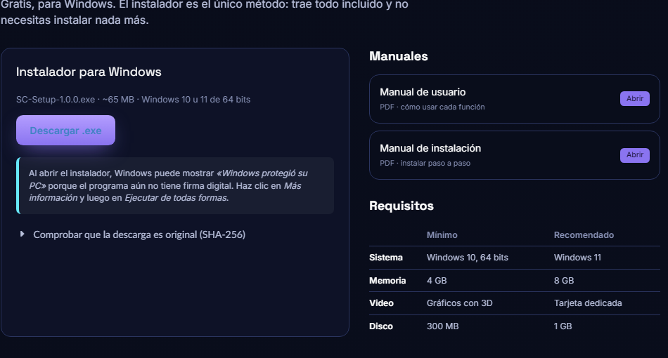
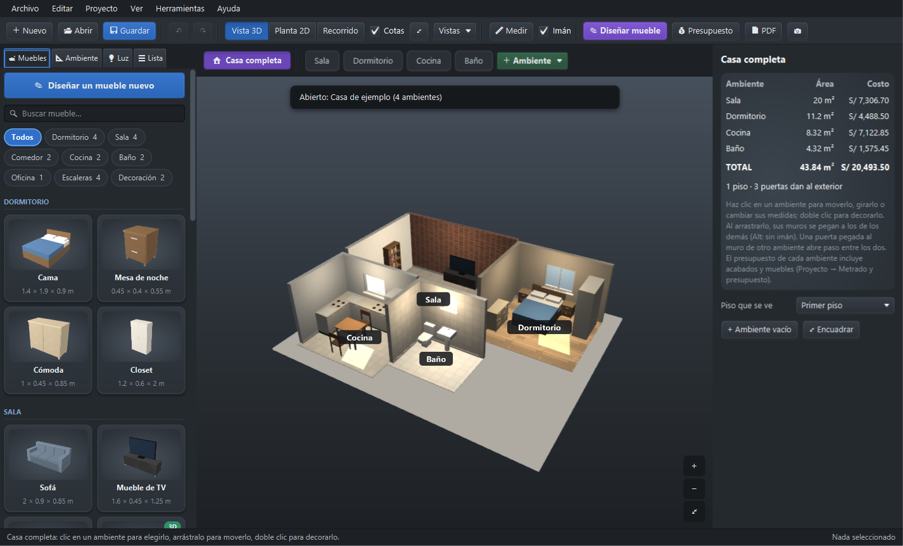

Guía paso a paso para instalar Space Cat en tu computadora con Windows
Versión 1.0.0 · Para Windows 10 y 11 de 64 bits
Diseña tu casa en 3D con medidas reales
Instalar Space Cat es muy sencillo y toma unos pocos minutos. No necesitas conocimientos técnicos ni instalar ningún otro programa: el instalador trae todo lo necesario (incluido Java) dentro de un solo archivo. Solo sigue esta guía en orden.
Antes de instalar, revisa que tu computadora cumpla con esto:
| Elemento | Mínimo (funciona) | Recomendado (mejor) |
|---|---|---|
| Sistema operativo | Windows 10 de 64 bits | Windows 11 |
| Memoria (RAM) | 4 GB | 8 GB o más |
| Tarjeta de video | Cualquiera con aceleración 3D (sirve la integrada) | Tarjeta dedicada |
| Espacio libre en disco | 300 MB | 1 GB |
| Pantalla | 1280 × 720 | 1920 × 1080 (Full HD) |
Casi todas las computadoras actuales son de 64 bits. Para estar seguro:
SC-Setup-1.0.0.exe (pesa unos 65 MB, así que puede tardar un poco según tu internet).
Como Space Cat es un programa nuevo, el navegador puede dudar y bloquear la descarga. El archivo es seguro. Según tu navegador:
SC-Setup-1.0.0.exe y haz doble clic sobre él.El instalador no pide contraseña de administrador: se instala solo para tu usuario, sin tocar el resto del sistema.
La primera vez que abres el instalador, Windows puede mostrar una ventana azul con el título «Windows protegió su PC». Esto aparece porque el programa todavía no tiene una firma digital de pago, no porque tenga virus ni ningún problema. Para continuar:
Si no ves el botón «Ejecutar de todas formas», es porque todavía no pulsaste «Más información». Pulsa ese enlace primero y el botón aparecerá.
Se abre el asistente de instalación. Sus ventanas están en inglés; aquí te decimos qué significa cada una y qué botón pulsar. Son cinco pantallas:
| # | Lo que dice la pantalla | Qué significa | Qué debes hacer |
|---|---|---|---|
| 1 | Welcome to the Space Cat Setup | Bienvenida | Pulsa el botón Next (Siguiente) |
| 2 | Destination Folder | Carpeta donde se instalará | No cambies nada; pulsa Next |
| 3 | Ready to install | Todo listo para instalar | Pulsa Install (Instalar) |
| 4 | Installing… | Barra de progreso; tarda menos de un minuto | Espera sin cerrar la ventana |
| 5 | Completed the Space Cat Setup | La instalación terminó | Pulsa Finish (Finalizar) |
En cualquier pantalla, el botón Back regresa a la anterior y Cancel cancela todo sin dejar nada instalado. Al terminar, Space Cat crea un acceso directo en el menú Inicio y otro en el escritorio.

Haz estas tres pruebas rápidas para asegurarte de que todo funciona:
| # | Qué hacer | Qué debe pasar |
|---|---|---|
| 1 | Abrir Space Cat | Aparece la pantalla de bienvenida |
| 2 | Elegir «Casa de ejemplo» y arrastrar con el ratón sobre el dibujo 3D | La casa se ve en 3D y gira |
| 3 | Guardar con Ctrl+S, cerrar y volver a abrir | Tu proyecto aparece en Archivo → Abrir |
Si las tres funcionan, ¡Space Cat está instalado correctamente!
Cuando salga una versión más nueva, solo tienes que:
Tus proyectos se conservan. No se pierde nada al actualizar.
Al desinstalar, tus proyectos no se borran. Si más adelante vuelves a instalar Space Cat, seguirán ahí.
| Lo que ves | Por qué pasa | Cómo solucionarlo |
|---|---|---|
| «Windows protegió su PC» | El instalador no tiene firma digital de pago | Pulsa Más información → Ejecutar de todas formas (apartado 4) |
| El navegador bloquea la descarga | El archivo se descarga pocas veces | Elige Conservar o Conservar de todos modos (apartado 2.1) |
| «No hay suficiente espacio» | Menos de 300 MB libres en el disco | Borra archivos que no uses y vuelve a instalar |
| El dibujo 3D se ve negro o muy lento | El controlador de tu tarjeta de video está desactualizado | Actualiza el controlador de video (Windows Update o la web del fabricante) |
| No encuentro el archivo descargado | Se guardó en otra carpeta | En el navegador pulsa Ctrl+J para ver las descargas y abrir su carpeta |
| Sigo con dudas | — | Escríbenos por WhatsApp al 919 192 008 y te ayudamos |
¿Necesitas ayuda? Escríbenos por WhatsApp al 919 192 008. Con gusto te acompañamos en la instalación.